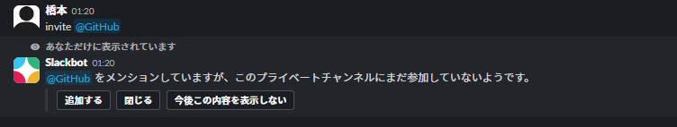
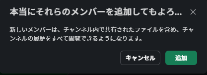
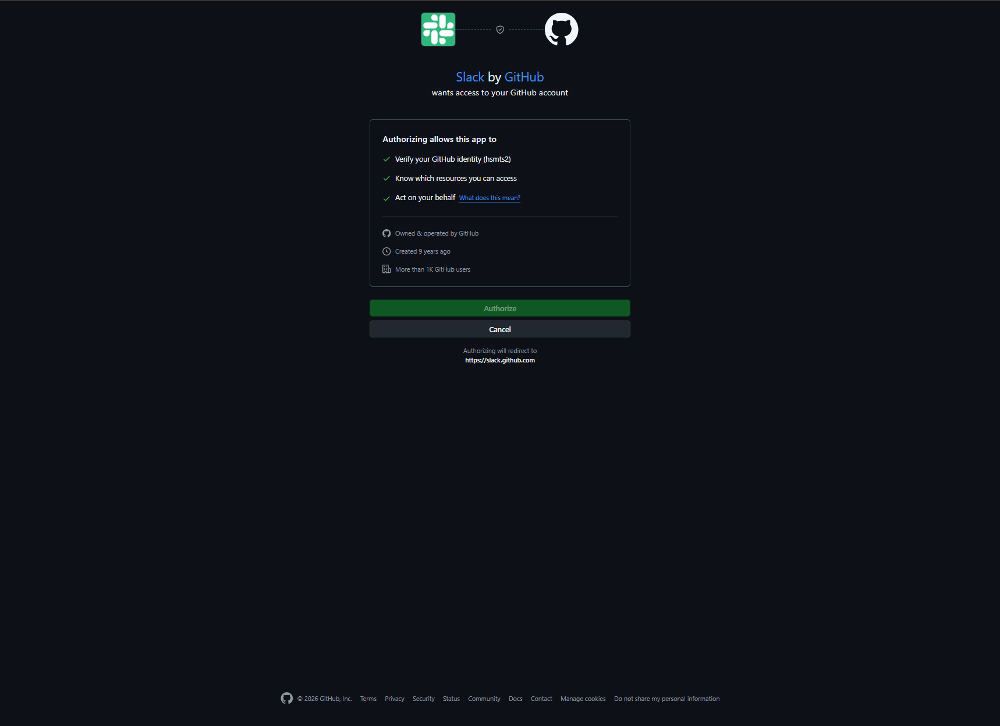
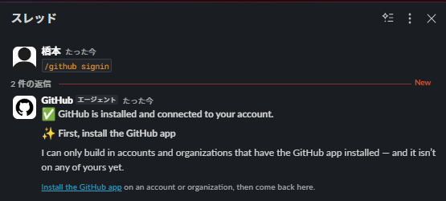
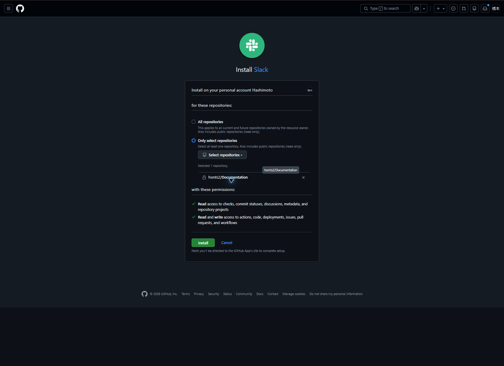

GitHubとSlackの連携・通知設定
Slackの非公開チャンネル#github-updatesで、hsmts2/Documentationの更新通知を受け取る構成例。チャンネル名とリポジトリ名は、利用する環境に合わせて読み替える
対象と確認ポイント
Slackワークスペースへのアプリ追加、GitHubアカウントの接続、GitHub Appのリポジトリへのインストール、チャンネルでの購読はそれぞれ別の操作。アカウントを接続しただけでは通知は始まらない
| 項目 | 構成例 |
|---|---|
| Slackチャンネル | #github-updates（非公開） |
| GitHubアカウント | hsmts2 |
| GitHub Appのアクセス対象 | hsmts2/Documentationのみ |
| 購読対象 | hsmts2/Documentation |
事前準備
1. 通知用チャンネルを作成
- Slackのサイドバーで追加ボタンを押し、
チャンネルを選択 - 通知用途が分かる名前を入力し、公開または非公開を選んで作成
- 作成したチャンネルを開き、チャンネル名からトピックと説明を設定
公開チャンネルはワークスペースのメンバーが検索・閲覧できる。通知の閲覧者を限定する場合は非公開を選び、参加者を必要な人に絞る。非公開チャンネルに追加したアプリは、チャンネルの履歴や共有ファイルを閲覧できる場合があるため、追加前に権限を確認する
| 設定項目 | 入力例 |
|---|---|
| チャンネル名 | github-updates |
| 公開範囲 | 非公開 |
| トピック | GitHubリポジトリの更新通知 |
| 説明 | 対象リポジトリのコミット、Pull Request、Issue、リリース、デプロイの通知を受け取るチャンネル |
チャンネルの通知音や未読通知は各メンバーのSlack設定で調整できる。GitHubの購読設定とは別の設定
複数のリポジトリを1つのチャンネルで購読する場合は、#github-updatesのような汎用名が適する。特定のリポジトリ専用なら、#documentation-updatesのように対象が分かる名称にする。チャンネル名とリポジトリ名を一致させる必要はない。名称変更だけで購読対象を変更する操作にはならないため、変更後は/github subscribe listで登録状態を確認する
2. GitHubアプリをSlackワークスペースに追加
- Slackのアプリ一覧で
GitHubを検索し、GitHub公式アプリの詳細を表示 Add to Slackから対象ワークスペースを選び、表示された権限を確認してインストール- アプリの導入に管理者承認が必要なワークスペースでは、承認依頼と完了通知を確認
アプリがワークスペースに導入済みの場合は再インストールせず、次のチャンネルへの招待とアカウント接続へ進む
3. 非公開チャンネルにGitHubアプリを招待
#github-updatesを開き、メッセージ入力欄で次を実行する。非公開チャンネルではアプリを明示的に招待する必要がある
/invite @githubメンションだけでは参加せず、Slackbotの確認からアプリを追加する。追加確認には、チャンネルのファイルや履歴にアクセス可能になる旨が表示されるため、対象チャンネルを確認してから承認する


4. GitHubアカウントを接続
SlackのGitHubアプリとのDMでサインインを開始し、ブラウザに表示されるアカウントと権限を確認して認証する。これはSlackユーザーとGitHubアカウントを結び付ける操作で、リポジトリへのアプリ導入とは別
/github signin
確認コード、認証URL、トークン、セッション情報を含むスクリーンショットは公開しない。掲載した図に確認コードは含めていない
5. GitHub Appを対象リポジトリへインストール
サインイン後も購読できず、GitHubアプリから「まずGitHub Appをインストール」と案内された場合、GitHub側でリポジトリへのアクセス許可がまだ完了していない

- 案内の
Install the GitHub appからGitHubのインストール画面を開く Only select repositoriesを選び、hsmts2/Documentationだけを指定- 表示された権限を確認し、
Installを選択。追加の本人確認が求められた場合はGitHub側で完了 - Slackへ戻り、インストール成功の応答を確認

この画面にはコード、Actions、デプロイ、Issue、Pull Requestなどへの読み書き権限が表示される。通知だけを使う場合も権限内容を確認し、All repositoriesを安易に選ばない。対象リポジトリを追加するときもGitHub側のアクセス範囲を再確認する
通知の購読と確認
GitHubアプリが参加している#github-updatesで実行する。GitHubアプリとのDMではなく、通知を受けるチャンネルの入力欄を使う
/github subscribe hsmts2/Documentation購読成功の応答を確認したら、同じチャンネルで登録一覧を確認する
/github subscribe list購読が成功すると、GitHubアプリからSubscribed to hsmts2/Documentationのような応答が返る。登録一覧に対象リポジトリが表示されることも確認する。実際の通知配送は、対象リポジトリで対象イベントが発生したときに別途確認する
標準の購読ではIssue、Pull Request、デフォルトブランチへのコミット、リリース、デプロイなどが通知対象。GitHub Actionsのワークフロー実行通知は標準では無効のため、必要なら個別に設定する
通知範囲の変更・解除
たとえばIssue通知だけを外す場合は次を実行する。通知種別を変更したら/github subscribe listで設定を再確認する
/github unsubscribe hsmts2/Documentation issuesチャンネルからリポジトリ全体の購読を解除する場合は次を実行する。GitHub側のアプリインストールやSlackユーザーのサインインは、これだけでは解除されない
/github unsubscribe hsmts2/Documentation